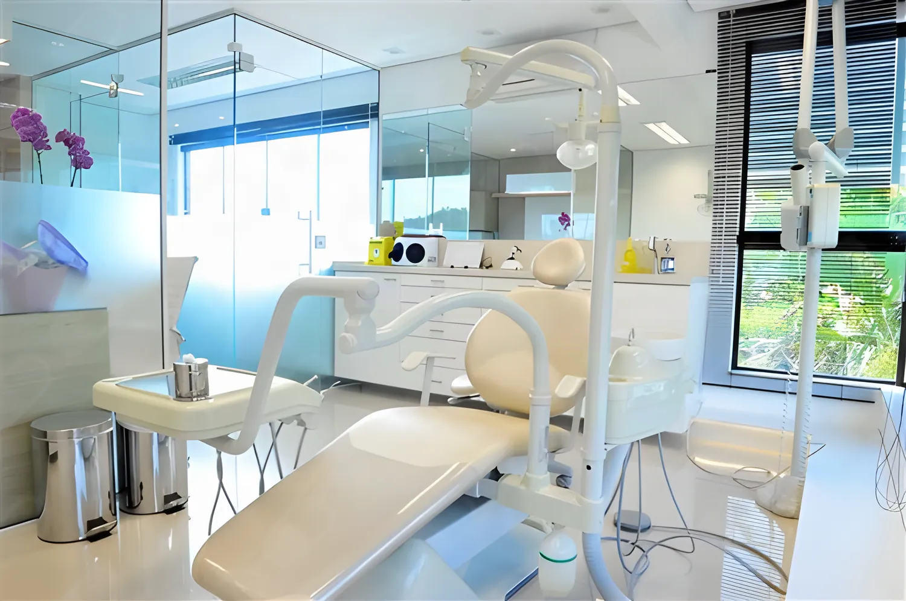
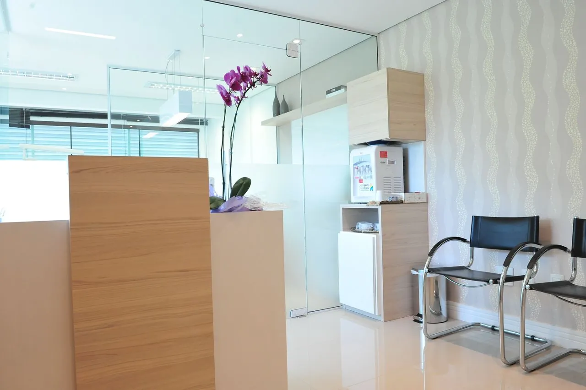
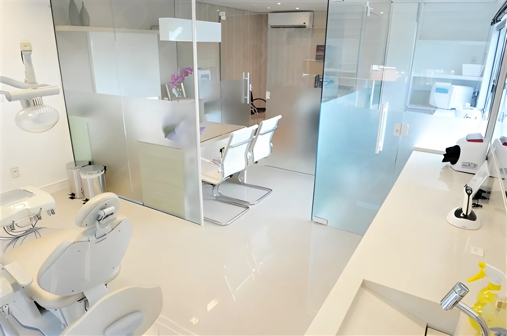
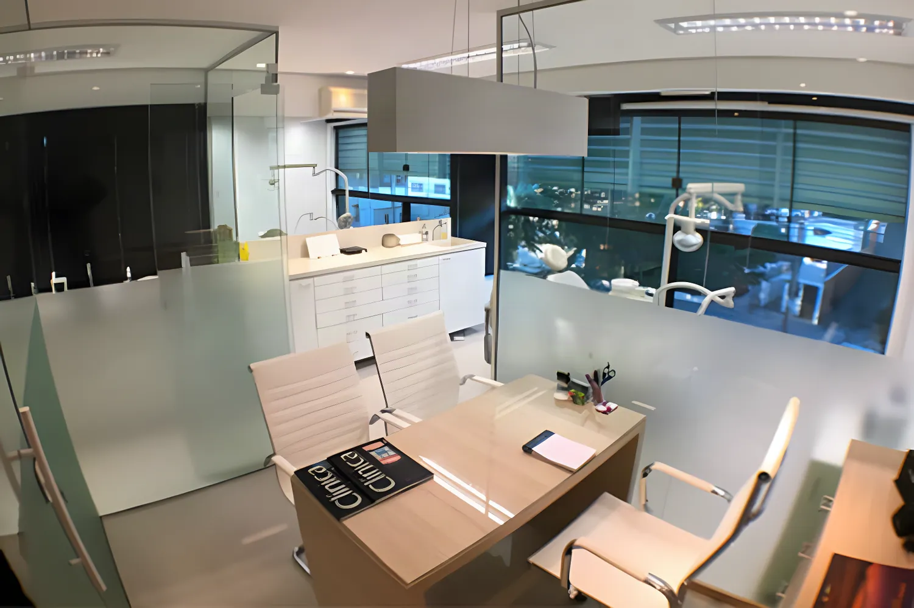
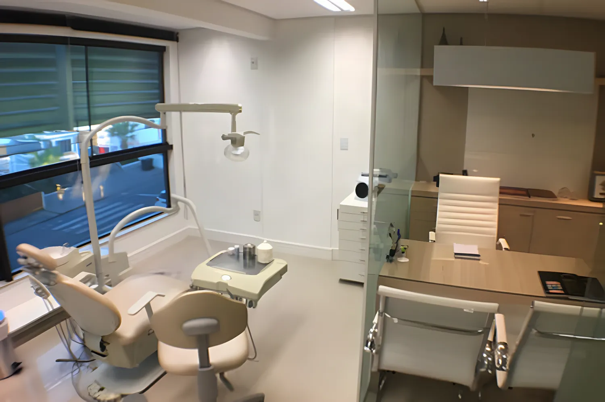

Odontologia estética com precisão e cuidado
Especialista em Dentística Restauradora pela UFPR, a Dra. Anita Nogiri cuida de sorrisos há 26 anos no João Paulo, em Florianópolis. Cada tratamento começa com uma conversa e um plano feito para você.

Dentística · UFPR
26
anos de odontologia, desde a formação na UFPR em 2000
232
avaliações de pacientes no Doctoralia
5,0★
nota média no Doctoralia
4,9★
nota no Google, com 36 avaliações
Do cuidado de rotina à estética do sorriso
Odontologia integrada é olhar para o sorriso inteiro: saúde da gengiva, função da mordida e estética caminham juntas no mesmo plano de tratamento.
Facetas de porcelana e de resina
Corrigem cor, forma e pequenos desalinhamentos com um resultado natural. Você escolhe com a Dra. Anita o material que faz mais sentido para o seu caso e o seu momento.
Lentes de contato
Lâminas ultrafinas de cerâmica, com mínimo ou nenhum desgaste do dente.
Saiba maisClareamento
Dentes mais claros com acompanhamento profissional, no consultório ou em casa.
Saiba maisRestaurações estéticas
Resina na cor do dente para recuperar forma e função, sem aparência de remendo.
Saiba maisImplantes
Reposição de dentes perdidos com base fixa, planejada junto com a parte estética.
Saiba maisPróteses
Coroas, pontes e próteses que devolvem mastigação e confiança para sorrir.
Saiba mais Cuidado completoEndodontia, periodontia, profilaxia e extrações
Tratamento de canal, saúde da gengiva, limpeza e extrações no mesmo consultório, com a mesma atenção aos detalhes.
- Endodontia (canal)
- Periodontia (gengiva)
- Profilaxia (limpeza)
- Extrações

“A Dra. é muito cuidadosa e explica muito bem o que vai ser feito.”
Paciência para explicar, precisão para executar
Formada em Odontologia pela Universidade Federal do Paraná e especialista em Dentística Restauradora, a área que cuida da forma, da cor e da função dos dentes.
No consultório, cada etapa é explicada antes de acontecer. Muitos pacientes chegam com medo de dentista e ficam por anos, alguns há mais de uma década.
- 2000Graduação em Odontologia pela UFPR
- 2009Especialização em Dentística Restauradora pela UFPR
- CROInscrição CRO-SC 10010
- PT · ENAtendimento em português e inglês
Sorrisos que continuam parecendo seus
O objetivo é um resultado natural, em harmonia com o rosto, os lábios e a gengiva. Nada de dentes que chamam mais atenção do que a pessoa.
O que os pacientes contam
Avaliações reais, publicadas pelos próprios pacientes no Doctoralia e no Google.
Eu sempre tive problemas pra ir ao dentista, as experiências anteriores nao tinham sido muito boas mas com a Dra Anita tudo foi diferente, muito paciente, explicando cada processo e etapa me senti super bem e agora ela se tornou minha dentista
O serviço prestado é excelente e a Dra. é muito cuidadosa e explica muito bem o que vai ser feito. O ambiente é agradável e o equipamento é novo
Tem aproximadamente 12 anos que faço meus tratamentos e manutenções com a Dra Anita e posso afirmar que ela é a melhor dentista de Florianópolis com amplo domínio na área de atuação. Recomendo fortemente
Dra. Anita cuida de quase todos da família e cada um de nós tem um agradecimento especial a lhe dar. Recomendamos fortemente a profissional impecável que ela é e aproveitamos esse espaço para ajudar você a fazer a escolha certa!
Além do ótimo acolhimento, por parte da Anita e de sua secretária Sandra, o atendimento superou as minhas expectativas . Todos os detalhes do procedimento foram bem explicados deixando-me a vontade para conversar e sanar algumas dúvidas e, o melhor, sem anestesia e sem dor.
Tive um ótimo atendimento com a Dra. Anita, boas explicações sobre meus procedimentos necessários, bem como, explicou coisas que eu não sabia. Foi bem atenciosa, além de ter mostrado um excelente conhecimento da área!
Excelente profissional! Atenciosa, cautelosa, simpática e muito humana. Me senti à vontade e confiante desde a primeira consulta. Super recomendo!
Dra Anita é uma excelente profissional. Inovadora na utilização de tecnologias, permitindo ao paciente compreender claramente a proposta terapêutica. Muito atenciosa e cuidadosa durante todo o procedimento.
Moro em outra cidade. Tive uma fratura em um dente e precisei de atendimento de emergência. Dra. Anita foi extremamente atenciosa e profissional no atendimento, resolvendo o problema prontamente!
A Dra. Anita é excelente profissional! Além de simpática e didática, tem o consultório moderno e com fácil acesso. Recomendo totalmente!
Fiz uma limpeza de rotina e a Dra. Anita foi muito atenciosa e eficiente no atendimento. O consultório é moderno com equipamentos de ultima geração. Ela explicou exatamente sobre os procedimentos realizados e próximos passos. Recomendo.
Muito atenciosa! Sou paciente a mais de 7 anos ! Moro longe do consultório mas amo o atendimento dela ! Local agradável e de fácil acesso!
A consulta foi ótima! Aconteceu de forma pontual, com atendimento gentil da recepcionista Dani e em um consultório muito organizado e bem equipado. Dra Anita é muito gentil e atenciosa.
Ambiente impecável e ótima profissional muito experiente, calma e passa muita confiança. Gostei muito do resultado do meu tratamento estético.
Um espaço claro e tranquilo no João Paulo
Ambiente silencioso, equipamentos atualizados e horário marcado com pontualidade, como os próprios pacientes destacam nas avaliações.





João Paulo, Florianópolis/SC
Segunda a sexta, das 9h às 19h
Antes da sua primeira consulta
Como faço para agendar?
Pelo WhatsApp (48) 99145-0038. Você conta o que precisa e a equipe encontra o melhor horário, de segunda a sexta, das 9h às 19h.
A Dra. Anita atende convênio?
O atendimento é particular. Você recebe um plano de tratamento detalhado antes de começar, para decidir com calma.
Quais formas de pagamento são aceitas?
PIX, cartão de crédito, cartão de débito, transferência bancária e dinheiro.
Faceta de porcelana ou de resina: qual escolher?
Depende do seu caso. A porcelana tem maior durabilidade e estabilidade de cor; a resina é mais acessível e feita direto no consultório. A indicação vem depois da avaliação.
Do you speak English?
Yes. Dra. Anita sees patients in Portuguese and English. Send a WhatsApp message to book.
Vamos conversar sobre o seu sorriso?
A primeira consulta é uma avaliação completa, com tempo para ouvir o que você deseja e explicar cada caminho possível.